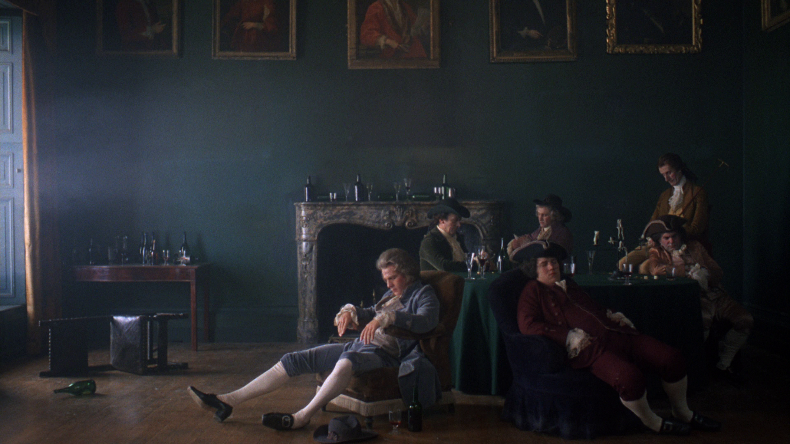

GEPID
Metodologie e Tecniche di Simulazione
2025/2026
Alessandro Miani
Lorenzo Marabese
Ludovico Pio Vicari
Nathaniel Scalabrino



Nato da una profonda passione cinematografica, questo progetto si concentra su Barry Lyndon (1975) di Stanley Kubrick, un capolavoro totale che ha rivoluzionato la storia del cinema. Il film è una vera e propria "pittura in movimento": Kubrick ha ricreato l'estetica del Settecento ispirandosi direttamente alle tele di maestri come Gainsborough e Hogarth, e ha superato i limiti tecnologici dell'epoca utilizzando speciali lenti ottiche NASA per girare scene illuminate esclusivamente a lume di candela.
IL LIMITE DEI DATI
Nonostante l'immenso valore storico dell'opera, l'analisi semantica del grafo di Wikidata ha fatto emergere una forte lacuna: il database descrive accuratamente gli aspetti commerciali e produttivi del film, ma ignora completamente i suoi legami con la storia dell'arte e l'innovazione tecnologica. Mancano, di fatto, le proprietà e le triple necessarie a connettere il film al suo vero patrimonio culturale e tecnico.
IL NOSTRO APPROCCIO IN 3 FASI
- Ricerca e Audit Semantico (SPARQL & Documentazione): Abbiamo incrociato lo studio della documentazione storica del film con l'interrogazione formale del grafo di Wikidata. Utilizzando query complesse e filtri avanzati (REGEX), abbiamo mappato il dataset e dimostrato scientificamente l'esatta posizione delle lacune informative (i gap relativi a quadri e lenti).
- Estensione Ontologica e Modellazione: Di fronte ai limiti del vocabolario standard di Wikidata, abbiamo progettato un'estensione teorica dell'ontologia. Abbiamo definito nuove proprietà specializzate per l'ottica e l'arte cinematografica, traducendole nel linguaggio formale del Web Semantico per accogliere le nuove triple RDF.
- Estrazione e Validazione con Multi-LLM: Abbiamo sfruttato la potenza di diversi modelli di Intelligenza Artificiale (LLM) attraverso strategie mirate di Prompt Engineering (Zero-shot, Few-shot, Chain of Thought). I diversi modelli sono stati utilizzati per estrarre le informazioni mancanti dalla documentazione, validarle logicamente e modellarle in triple pulite e pronte per l'arricchimento.